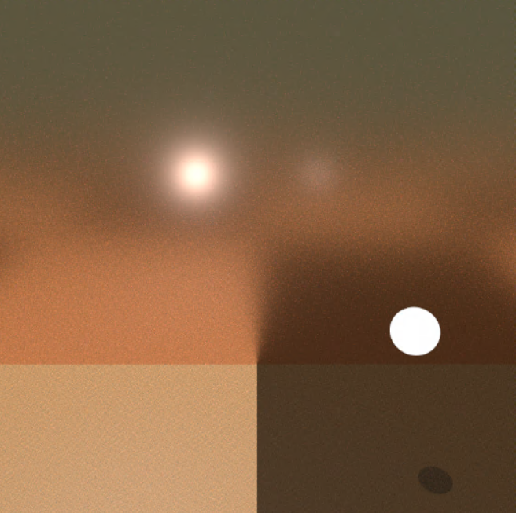
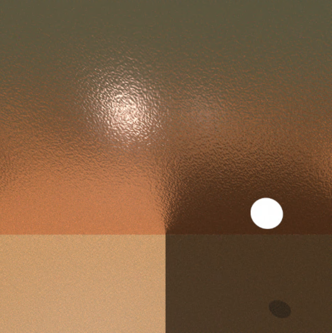
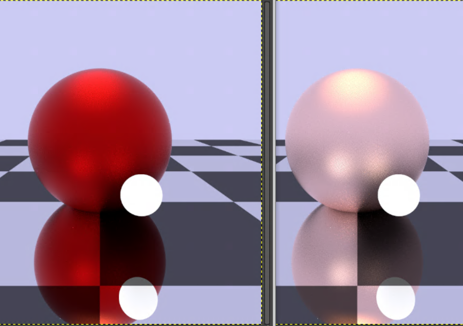

Microfacet Surface Effects
Simulating microfacet surface geometry with PBRT. The following image shows a perfectly flat surface. The object is a metal made of copper, hence the bronze look. All metals below are rendered with their corresponding SPDs (Spectral Power Distributions) provided by the PBRT library.

A rougher version of the above surface

Rendering copper with the Cook-Torrance model. Left - standard Fresnel implementation without k (absorption co-efficient). Right - Accommodating for k in the formula as well gives us the correct result.

Rendering the Stanford dragon made out of gold.